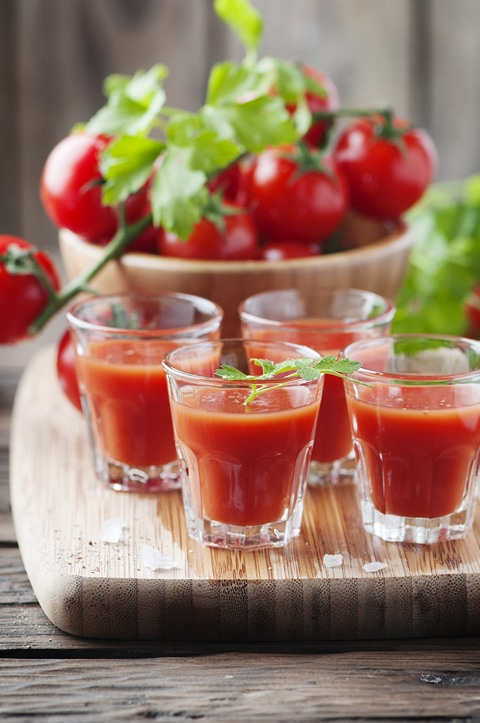
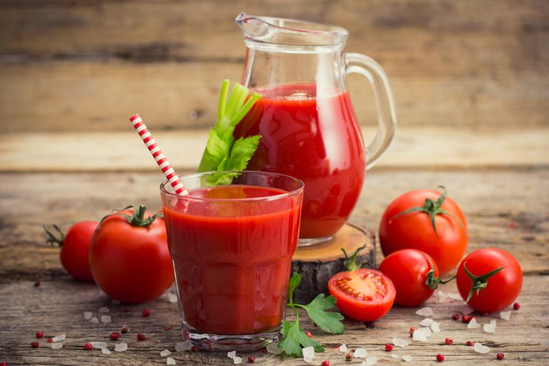

#2 – Juicing Tips and Tricks

Juicing is one of the easiest ways to get your daily recommended servings of fruits and veggies every day. It is digested quickly and easily, allowing us the opportunity to increase our body’s natural digestive efficiencies.
They also flood our bodies with antioxidants that boost our immune system. Antioxidants in fresh juice can lead to healthier and more radiant hair, skin, and nails that glow from the inside out!
If you are new to juicing, don’t just go out and purchase a low-end juicer, conventional produce, and cram anything down the juicer chute with your fingers crossed, in hopes of creating an enjoyable masterpiece.
Today, I am going to share how to avoid purchasing the wrong juicer, and tips and tricks in making your juice delicious. I am also going to cover some health concerns that you need to know before juicing.
Juicing Pothole to Watch for
Using the wrong type of juicer
Not all juicers are equal. There are less expensive centrifugal juicers on the market, but they introduce heat and oxygen and destroy the enzymes and nutrients in your fruits and vegetables.
While it may cost you a bit more initially, a premium cold-press juicer will produce a superior-quality juice and allow you to extract more from your fruit and vegetables, saving expense in the long-term.
If you think about it, we are here talking/reading about juicing because we want to clean up our diet and help support our bodies in every way possible. Why buy fresh organic produce, why purchase a juicer, and why take the time to make juice if we are not getting everything we could from it? Now that’s a waste of money, time, and effort.

Tips – Making the Best of Juicing
- Green veggies like kale, spinach, parsley, and cabbage surprisingly do not taste very intense when juicing, so load up on those and enjoy!
- Citrus, lime juice, in particular, can help to cut out any bitter taste from vegetables.
- Juicing high water content vegetables like cucumbers and celery will help add volume and nutrients.
- Mix things up. Don’t drink the same combination every day. Get a variety of nutrients!
- Never toss the juice pulp. Use it in raw dehydrated crackers and loaves of bread. If you are juicing a lot or perhaps not very often, you can freeze the pulp to use at a later date.
© AmieSue.com